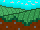

El camino delCONOCIMIENTO
Presione ENTER para comenzar
Cómo jugar
Información
Plantel Hermosillo V
Informática
= Juego Educativo =
Profesor Bernardino Huerta
- Integrantes -
Herrera Armenta Emmanuel
Vindiola Ocaño Omar Eduardo
Sotelo Núñez Edgardo
Grupo 203M
Hmo, Son
17/Feb/23
- Movimiento -
Se puede mover con las flechas (🠈 y 🠊) o
como alternativa, A y D
Las casillas moradas sirven para trasladarse entre las mismas cuando se presiona ESPACIO
- Interacciones -
Las casillas azules indican una interacción con diálogo al acercarse
Para avanzar entre diálogos, se presiona ENTER
Hacer CLICK en la opción que se crea correcta para seleccionarla
- Puntaje -
Cada respuesta correcta vale 50 puntos, y dependiendo de la racha, se obtendrá un mayor multiplicador de puntos
Cada respuesta incorrecta restará del multiplicador de puntos, y se perderá la racha actual
Un mayor puntaje será de gran ayuda para la pregunta final, así que hay que estar atento